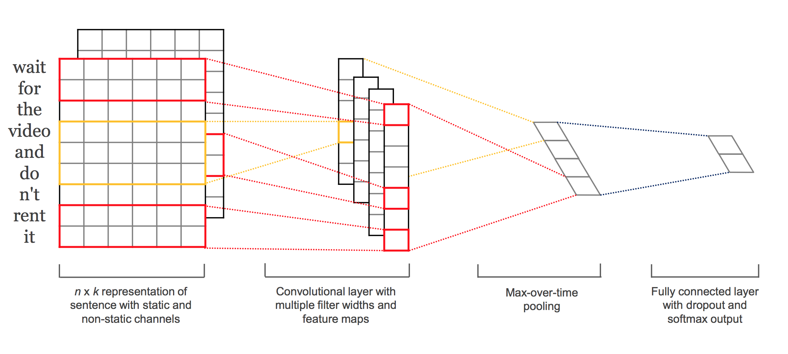

Data : NJU Musicmood
計777筆的歌詞
| Mood Category |
Training Samples |
Testing Samples |
| angry |
100 |
71 |
| happy |
100 |
106 |
| relaxed |
100 |
101 |
| sad |
100 |
99 |
Ｍodel 1: TFIDF(Baseline)
- Regular bag-of-word TFIDF with SVM
- TrainACC : 0.8625
- TestACC : 0.307
Ｍodel 2: TFIDF_classifier
- Ref : AUTOMATIC MOOD CLASSIFICATIONUSING TF*IDF BASED ON LYRICS
- TrainACC : 0.845
- TestACC : 0.297
Model 3 : CNN
Ref : Convolutional Neural Networks for Sentence Classification
以本論文的精神建構簡單的CNN模型
Model 3 : CNN
以類似圖像辨識的概念處理文字

Tips for CNN
- Embedding : non-static 較好
- Filters region Size : 慢慢往上找
- Filters Size : 固定一個大小慢慢往上找，中央伍為準散開
- MaxPooling : 唯一指名：1
Ref : A Sensitivity Analysis of (and Practitioners’ Guide to) Convolutional Neural Networks for Sentence Classification
Our Setting(currently)
- Embedding : Word2Vec : GoogleNews 300D
- 基本上沒有篩字詞
- TrainAcc : 0.95-0.98
- TestAcc : 0.40-0.47
Summary
| Method |
Train_Acc |
Test_Acc |
| TFIDF(Baseline) |
0.8625 |
0.307 |
| tfidf based classifer |
0.845 |
0.297 |
| Convolutional Neural Network |
0.95-0.98 |
0.4-0.47 |